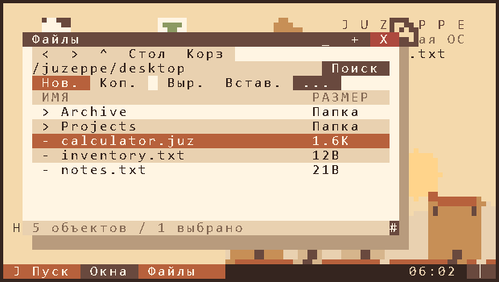

Стабильная версия 0.6.2
Приложения для
твоего города.
Официальный каталог пакетов JuzeppeOS. Установи ОС на компьютер CC: Tweaked, подключи репозиторий и загружай приложения прямо в Minecraft.
CC: Tweaked · CraftOS-PC · API 1

Магазин уже подключён
В JuzeppeOS 0.6.2 официальный каталог выбирается автоматически. Для предыдущих версий можно подключить его вручную.
JUZEPPEOS 0.6.1
$ jpkg repo https://raw.githubusercontent.com/gosuparenek/juzeppe-repo/main $ jpkg refresh
Каталог приложений
Загрузка каталога…